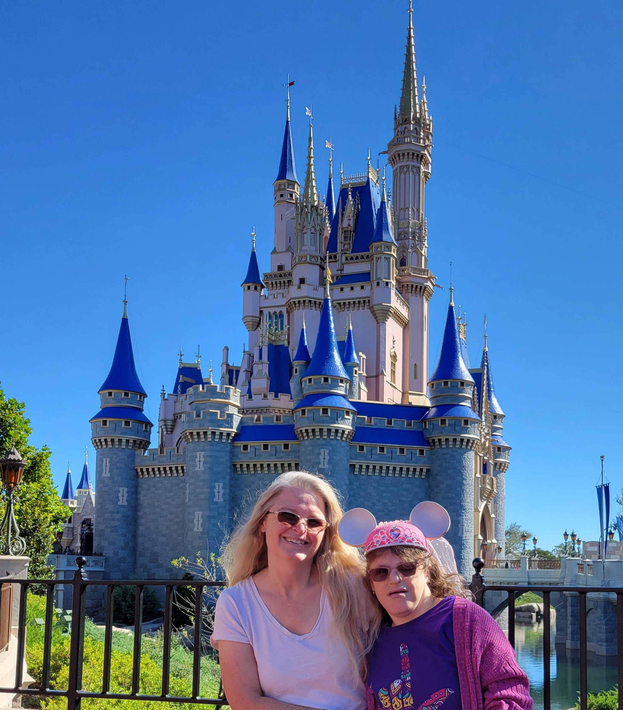
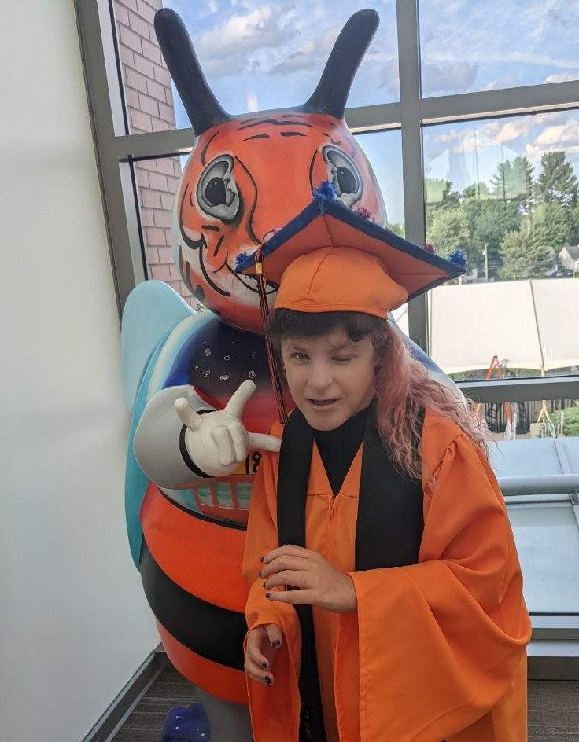
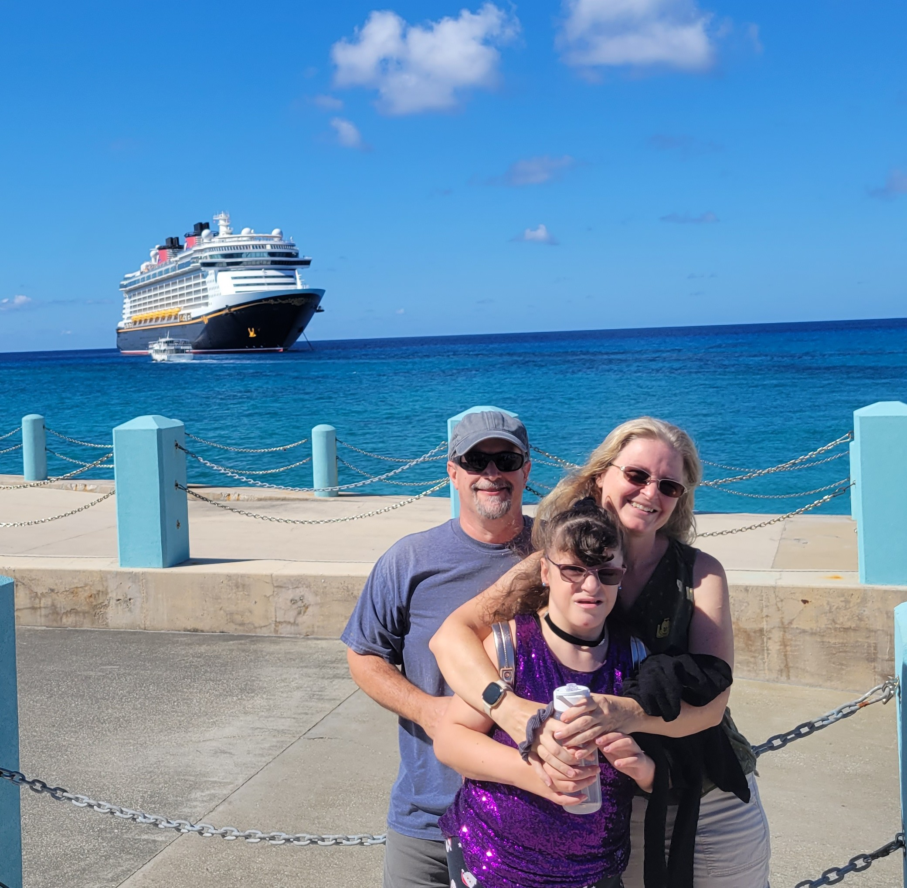
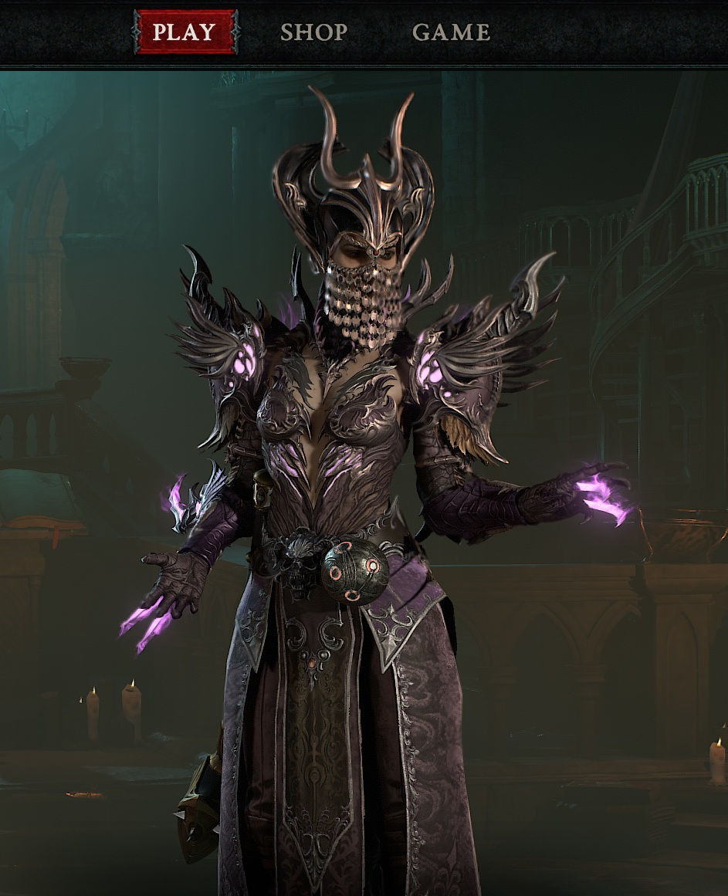
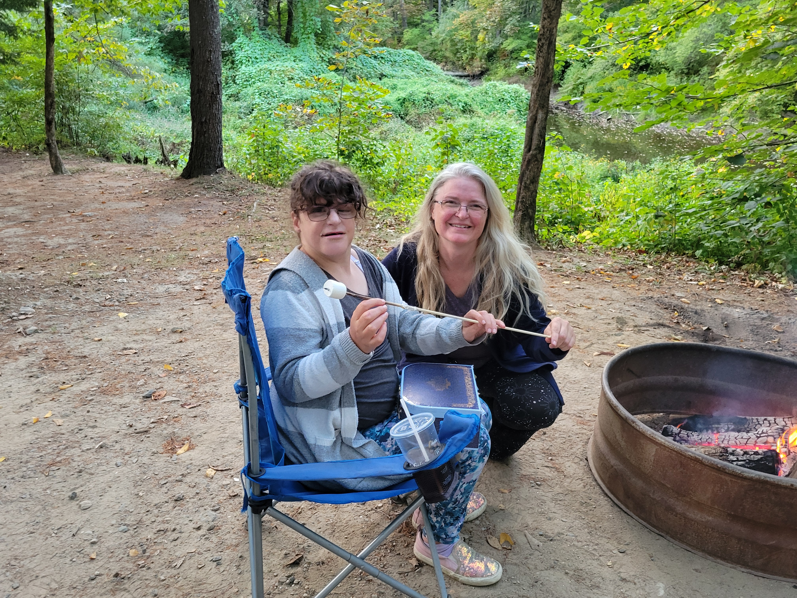
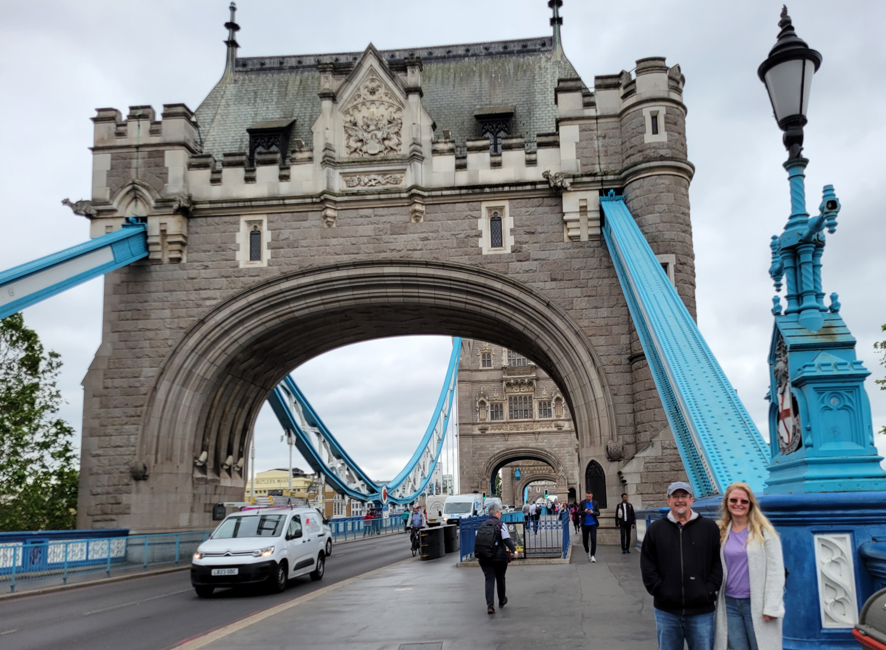
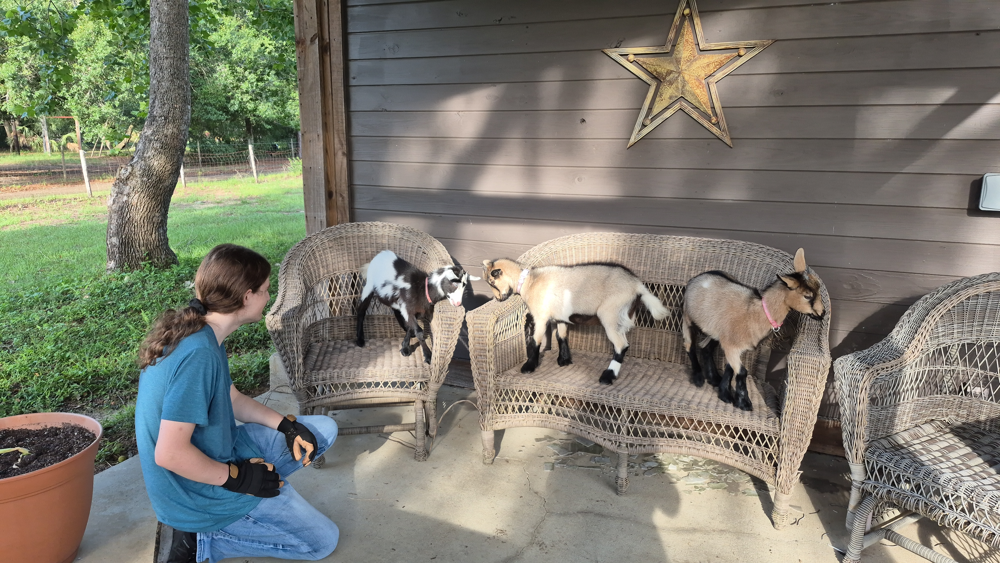
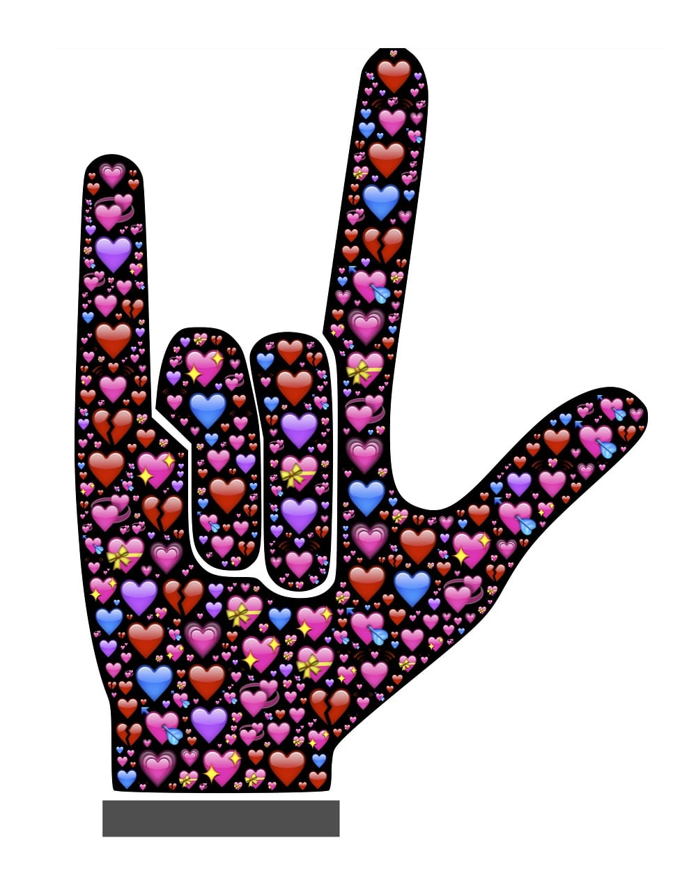

Beyond the Résumé
First and foremost, I’m a mom. I have two adult children, Julian, who is in college, and Jenna, my daughter with special needs who is Deaf. Being their mom has shaped so much of who I am and the choices I’ve made along the way. The Deaf community is an important part of our lives, and I learned American Sign Language for Jenna—not as a course or credential, but because it is how we communicate and a part of our everyday life.
When Jenna finished school, I wanted her days to continue to have purpose, activity, and something she could be proud to be part of. That idea eventually became Rough Road Ranch, our little goat and chicken farm. Together, we care for the animals, raise goats for milk, collect and sell fresh eggs, and are now learning about beekeeping with hopes of adding our own honey someday. Life with Jenna has also taught me to appreciate a little magic whenever I can find it—which is why you’ll often find the two of us at Magic Kingdom, aboard a Disney cruise, or heading off on our next adventure.

Where the Magic Is Real
Jenna is my princess, and to her, magic is real. Taking her to Magic Kingdom and seeing it through her eyes reminds me that you’re never too old to believe in a little magic.
Forever Learning
“There is always something new to learn, somewhere new to go, and another adventure waiting to begin.”
This website is part of that journey, designed and built by me while continuing to expand my HTML, CSS, and Bootstrap skills.

So Very Proud
Watching Jenna graduate from the American School for the Deaf was one of my proudest moments as a mom. Her school and the Deaf community have been an important part of our lives, and that day represented so much more than receiving a diploma.

Adventure at Sea
Disney cruises have become another favorite adventure for Jenna and me. There’s something pretty special about leaving the everyday world behind and making memories together at sea.

Yes, I’m a Gamer
I started gaming when the first Diablo was released (stop doing the math on how old I am). It led to my interest in technology and programming. As my children grew, gaming also became a way to bond with them. Instead of traditional board games, we played Wizard101 together. When my son got older, we played Diablo III and IV, along with Clash of Clans, Pokémon GO, and an embarrassing amount of FreeCell.

Life Under the Stars
From Florida to New Hampshire, I’ve camped my way up and down the East Coast. Some of my favorite memories are the simple ones—being outdoors, exploring somewhere new, and sharing the experience with Jenna.

Always Exploring
I love experiencing places that are completely different from home, whether that means exploring Scotland and England or watching the legendary 24 Hours of Le Mans in France. My travels have also taken me to Mexico, the Bahamas, Puerto Rico, Jamaica, and Canada—and there are still plenty of places left on my list.

Rough Road Ranch
What started as an idea to give Jenna something meaningful of her own became an adventure for all of us. Together, we care for our goats and chickens, collect fresh eggs, and are now taking on our next challenge—beekeeping!
Become a Lifelong Learner
A few years ago, I started using Udemy while studying for the PMP exam. Curiosity led me to explore other courses, beginning with programming to refresh my HTML, CSS, and JavaScript skills. From there, I found myself learning about psychology, bread and cheese making, piano, Spanish, ASL, and so much more.
Learning has become a habit. I dedicate at least 15 minutes each day to learning something new. It doesn’t take long, and I’m always surprised by how much I look forward to that time. Never stop learning!

Want to Learn ASL?
When I learned my daughter was Deaf, I took ASL classes at St. Petersburg College in Florida. Over the years, technology has made it easier than ever to learn something new. One resource I enjoy is Bill Vicars on YouTube. I’m not paid to promote his channel—I simply found his lessons engaging and easy to follow.
Sometimes, when we go to Disney, I wear earplugs for a while to experience the environment with less access to sound. It gives me another perspective on some of the things Jenna encounters in her everyday life.
Image created by John Hain